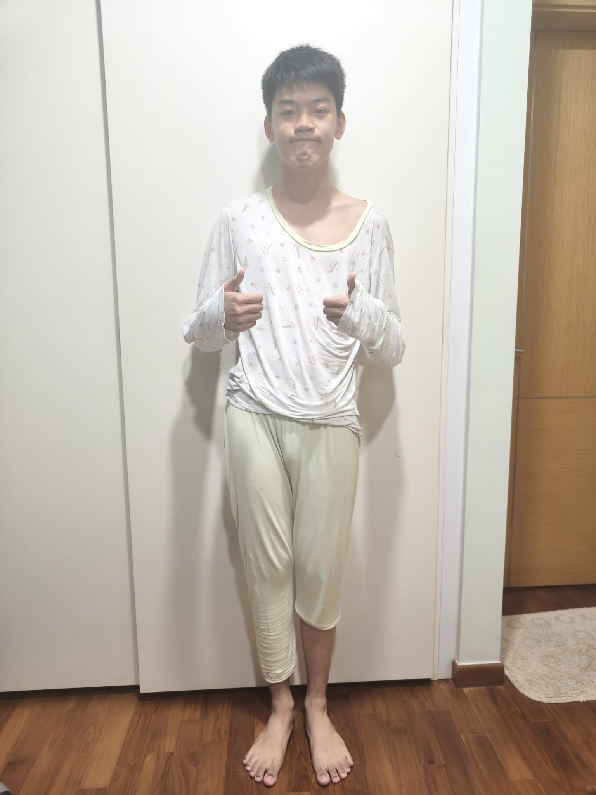

Family
I have a mother, a father, and two sisters who support me in my studies.
Background
My English name is Chai Ji Xu Brandon, and I am currently studying game development.

I am Brandon Chai. I enjoy learning practical skills and trying activities that let me build confidence, solve problems, and work better with others.
I am still discovering my long-term inspiration and career direction, but I want to improve myself by staying more disciplined and open to learning.
I have a mother, a father, and two sisters who support me in my studies.
I can be observant, curious, and willing to learn from experience.
I want to manage my time better, stay focused, and avoid procrastinating.
I have not completed my RIASEC Profile yet
Back to top